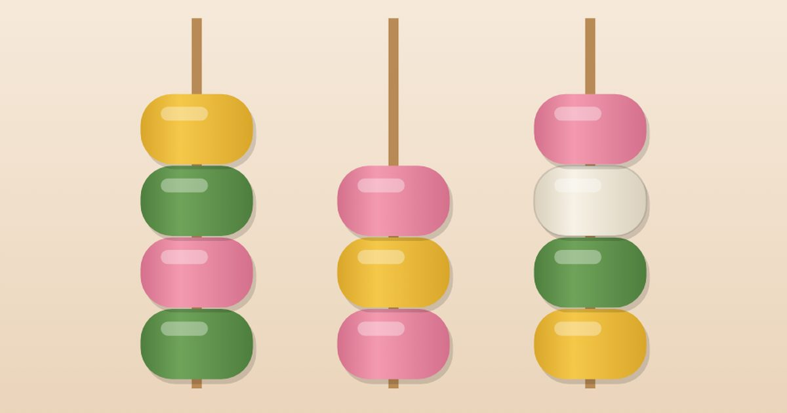

떡꼬치 정리
Rice Cake Sort
정렬 퍼즐 · 두뇌 · 어르신도바로 시작설치 없음폰 · PC
▶ 지금 바로 하기로그인 없이 브라우저에서 바로 시작돼요
어떤 게임인가요?
쑥떡 · 분홍떡 · 치자떡… 오색 떡이 꼬치마다 뒤섞였어요. 꼬치를 눌러 맨 위 떡을 다른 꼬치로 옮겨, 꼬치마다 한 가지 떡만 남기면 완성! 같은 색 위나 빈 꼬치에만 올릴 수 있어요. 판마다 컴퓨터가 먼저 풀어 보고 풀리는 판만 내놓아요.
목표 · 꼬치를 눌러 맨 위 떡을 옮겨, 꼬치마다 한 가지 떡만 4개씩 모으기.
게임 방법
- 꼬치를 누르면 맨 위 떡(같은 색이 붙어 있으면 함께)이 들려요 · 옮길 꼬치를 누르세요
- 같은 색 떡 위나 빈 꼬치에만 올릴 수 있어요 · 한 꼬치에 4개까지
- 꼬치마다 한 가지 떡이 4개씩 모이면 완성!
- 막히면 ↶ 되돌리기 · 💡 힌트 · ＋ 빈 꼬치(한 판에 한 번)
- 자유 모드는 3분 동안 몇 판을 푸는지 · 적게 옮길수록 점수가 커요
등장하는 것들
- 쑥떡 · 초록
- 분홍떡 · 분홍
- 치자떡 · 노랑
공략 팁
- 빈 꼬치는 가장 귀한 자리 — 아무 떡이나 올리지 말고 아껴 두기
- 같은 색이 위에 붙어 있으면 한 번에 함께 옮겨져요
- 막히면 ↶ 되돌리기, 그래도 막히면 💡 힌트
- ?로 가려진 떡은 위를 치워야 보여요
 무당벌레 오락실
무당벌레 오락실 성 지키기
성 지키기 통통 배구
통통 배구 과일 베기
과일 베기 지뢰찾기
지뢰찾기 십장생 짝맞추기
십장생 짝맞추기